NOX 소프트웨어
NOX software
영상의 저장과 검색, 사용자 권한 관리를 담당하는 소프트웨어입니다. 녹화·저장(NVR), 통합 관제(VMS), AI 영상분석을 단일 소프트웨어로 제공하며, 분석 전용 서버 증설이나 기능별 플러그인 라이선스가 필요하지 않습니다. YIYOL 어플라이언스 탑재 공급을 기본으로 하고, 소프트웨어 단독 공급과 파트너 장비 탑재도 지원합니다.
Software that handles the storage and retrieval of video and the access control around it. Recording and storage (NVR), unified monitoring (VMS), and AI video analysis are delivered as a single software product, with no separate analytics server to provision and no per-feature plugin licensing. It ships on a YIYOL appliance by default, and is also supplied standalone or deployed on partner hardware.
녹화 · 저장
Recording & storage
기존 설치 카메라를 교체 없이 연결해 영상을 수집·저장합니다. 보존 정책에 따라 자동 정리되며, 필요한 시점은 타임라인에서 즉시 조회·재생합니다.
Connects to already-installed cameras without replacement and records what they send. Footage is retired automatically under the retention policy, and any point in time is retrieved and played back from the timeline.
통합 관제
Unified monitoring
다수 현장의 카메라와 NVR을 단일 화면에서 통합 관제합니다. WebRTC·WHIP 기반으로 지연을 최소화하며, 사용자별로 조회 가능한 채널과 사용 기능을 분리해 부여합니다.
Cameras and NVRs across multiple sites are monitored from a single screen. WebRTC and WHIP keep latency to a minimum, and each user is granted only the channels and functions assigned to them.
AI 영상분석
AI video analysis
침입, 라인 통과, 쓰러짐, 보호구 미착용, 무단 투기 등을 규칙으로 정의해 검출합니다. 규칙만으로 판정이 어려운 장면은 VLM이 재판독하므로, 모델 재학습 없이 문장 입력만으로 시나리오를 확장할 수 있습니다.
Situations such as intrusion, line crossing, a fall, missing PPE, and illegal dumping are defined as rules and detected. Scenes a rule cannot settle are re-read by a VLM, so scenarios are extended by entering a sentence rather than retraining a model.
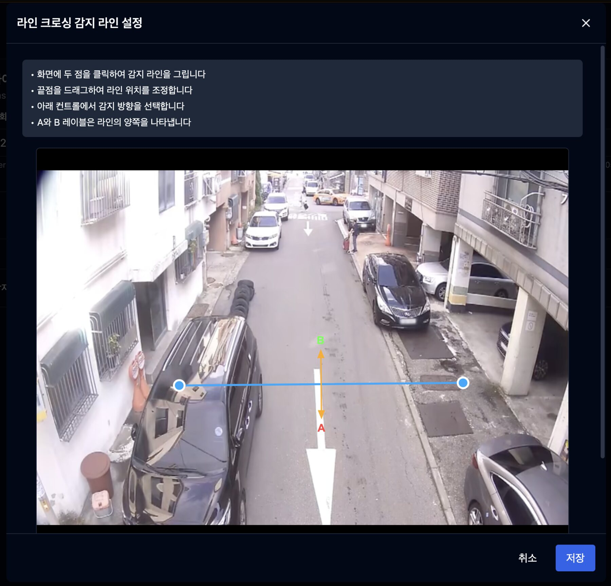
지능형 영상분석 기반 이벤트 검출
Event detection through intelligent video analysis
카메라 화면에 감지 영역과 기준선을 지정해 규칙을 구성합니다. 움직임이 검출된 프레임만 검출기로 전달하고 해석이 필요한 장면만 VLM으로 전달하는 단계형 파이프라인 구조로, 단일 장비에서 다채널 분석을 동시에 수행합니다.
Detection zones and reference lines are placed directly on the camera view to compose a rule. A staged pipeline passes only frames with detected motion to the detector, and only scenes requiring interpretation to the VLM, so a single unit performs analysis on multiple channels concurrently.
- 영역·선 편집기를 통한 침입·라인 통과·배회 검출 규칙 정의Intrusion, line-crossing, and loitering rules defined in the zone and line editor
- 쓰러짐·보호구 미착용·무단 투기 시나리오를 문장으로 추가, 모델 재학습 불필요Fall, missing-PPE, and illegal-dumping scenarios added as a sentence, with no model retraining
- 검출 시 이벤트 녹화·이메일·WebHook 자동 실행Event recording, email, and WebHook executed automatically on detection
- 번호판 인식(LPR), 객체 추적, 메타데이터 색인 지원License plate recognition (LPR), object tracking, and metadata indexing
자연어 기반 영상 검색
Natural-language video search
녹화 영상을 문장으로 검색합니다. "어제 밤 가방 든 빨간 구두 여자"와 같이 시간, 외형, 소지품을 한 문장으로 입력해 대상 인물을 조회합니다. 사전 색인이 적용되지 않은 과거 구간은 카메라와 시간 범위를 지정하면 즉시 색인을 생성하며 검색합니다.
Recorded footage is searched with a sentence. Time, appearance, and belongings are entered as a single query — "a woman in red shoes carrying a bag, last night" — to locate the person. Stretches with no prior index are indexed on demand once a camera and time range are specified.
- 자연어 인물 검색, 시간·외형·소지품 통합 질의Natural-language person search across time, appearance, and belongings
- 사후 AI 검색, 미색인 과거 녹화의 온디맨드 색인 및 조회Post-hoc AI search, indexing past recordings on demand
- 이벤트·메타데이터·타임라인 검색 및 북마크Event, metadata, and timeline search, with bookmarks
- 검색 결과에서 해당 시점 영상 즉시 재생 및 클립 반출Immediate playback from a result, with clip export
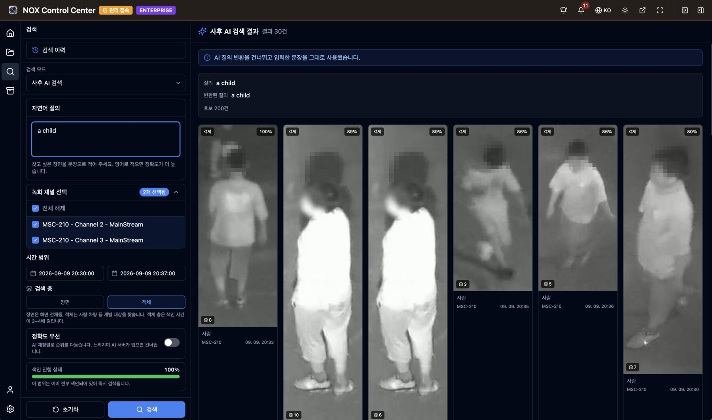
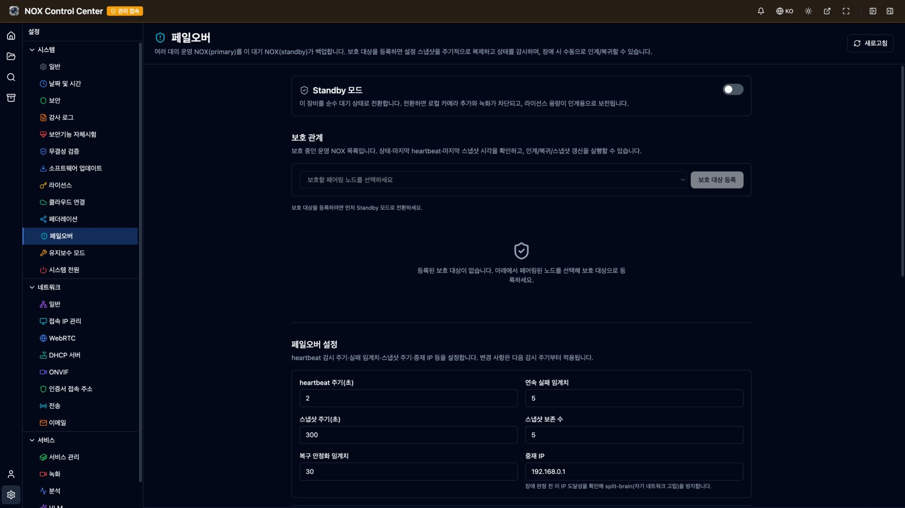
n:1 이중화 및 무중단 녹화
n:1 redundancy and uninterrupted recording
다수의 NOX를 상호 연결해 라이브·검색·재생을 단일 화면에서 제공하며(페더레이션), 대기 장비 1대가 다수의 운영 장비를 보호하는 n:1 페일오버를 구성합니다. 대기 장비는 운영 장비의 설정을 주기적으로 복제하고, 장애 발생 시 카메라 수집과 녹화를 인계받습니다. 복구 이후에는 장애 기간에 대체 녹화한 영상을 원 장비의 타임라인으로 회수·병합합니다. 클라우드를 경유하지 않고 장비 간 직접 연결합니다.
Multiple NOX units are linked so that live view, search, and playback are served from a single screen (federation), and one standby unit protects several operating units (n:1 failover). The standby replicates their configuration on a schedule and takes over capture and recording when one fails. After recovery, footage recorded during the outage is retrieved and merged into the original unit's timeline. The units connect directly, with no cloud in the path.
- n:1 페일오버, 대기 장비 1대로 다수 운영 장비 보호 및 자동 인계·복귀 선택n:1 failover, one standby protecting many, with optional automatic takeover and failback
- 장애 기간 영상 회수, 원 장비 타임라인 병합 및 전송 중 열람 지원Record-back, merging the outage window into the original timeline and viewable during transfer
- 페더레이션, 다수 NOX의 라이브·검색·재생 단일 트리 통합Federation, with live view, search, and playback across every unit from one tree
- 유지보수·업데이트 중 감시 자동 유예로 불필요한 인계 방지Planned maintenance and updates suspend the watch, preventing unnecessary takeover
※ 페더레이션은 정식 기능이며, 페일오버는 현재 베타로 제공됩니다. 실제 장애 대응에 적용하기 전 테스트 환경에서 인계·복귀 검증을 권장하고, 중요 녹화는 별도 백업을 병행하시기 바랍니다. ※ Federation is generally available; failover currently ships as a beta feature. We recommend validating takeover and failback in a test environment before relying on it during a live incident, and keeping a separate backup of critical recordings.
비식별화·암호화 기반 영상 반출
Export with de-identification and encryption
녹화 영상을 외부로 반출할 때 개인정보 마스킹과 암호화를 백업 단계에서 함께 처리합니다. 얼굴, 인물 전신, 번호판을 선택해 마스킹하며, 마스킹은 새로 인코딩한 사본에만 적용되고 원본 녹화는 변경되지 않습니다. 반출 목적에 따라 암호화 형식과 범용 재생 형식 중에서 선택합니다.
Personal-data masking and encryption are applied at the point of export. Faces, full bodies, and license plates are selected for masking, and the masking is written to a newly encoded copy, leaving the original recording untouched. The output format is chosen according to what the export is for.
- 마스킹 대상 3종(얼굴·인물 전신·번호판) 및 방식 3종(블러·모자이크·솔리드) 선택Three masking targets (face, full body, license plate) and three styles (blur, mosaic, solid)
- 대상별 검출 민감도 조절(10~90%) 및 객체 추적 기반 마스킹 연속성 유지Per-target detection sensitivity (10–90%), with object tracking keeping the mask continuous
- 처리 실패 구간 발생 시 백업 전체를 오류 처리, 미마스킹 원본은 기록하지 않음Fail-safe: if any segment fails to process, the export errors out and unmasked footage is never written
- NOXV 형식 — AES-256-GCM 암호화, HMAC-SHA256 무결성 검증, 채널별 독립 키 적용NOXV format — AES-256-GCM encryption, HMAC-SHA256 integrity verification, per-channel keys
- MP4 형식 — 전용 플레이어 없이 일반 동영상 플레이어에서 바로 재생MP4 format — plays in any ordinary video player, with no dedicated viewer
※ 암호화와 무결성 검증은 NOXV 형식에 적용됩니다. MP4 는 범용 재생을 위한 형식으로 암호화가 적용되지 않으며, 반출·장기 보관 목적에는 암호화한 NOXV 를 권장합니다. 보안 모드에서는 NOXV 암호화 백업이 의무 적용됩니다. ※ Encryption and integrity verification apply to the NOXV format. MP4 is intended for general playback and is not encrypted; encrypted NOXV is recommended for release and long-term retention. In secure mode, encrypted NOXV export is mandatory.
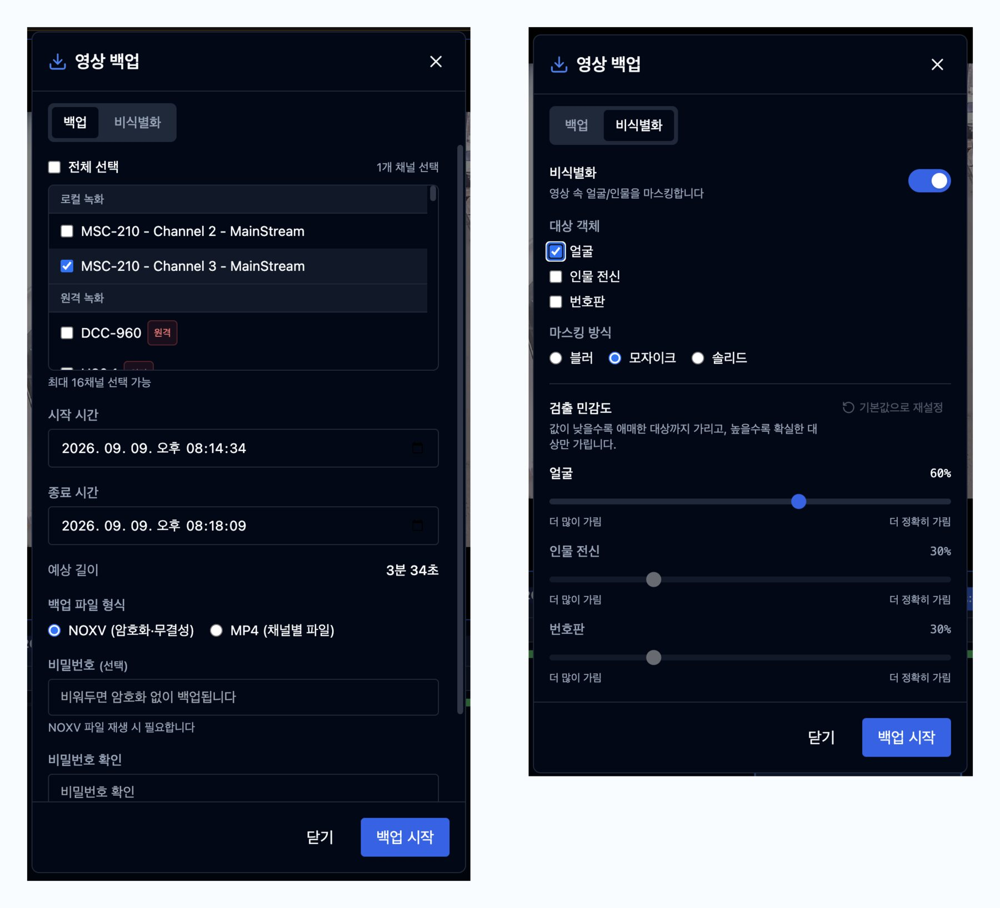
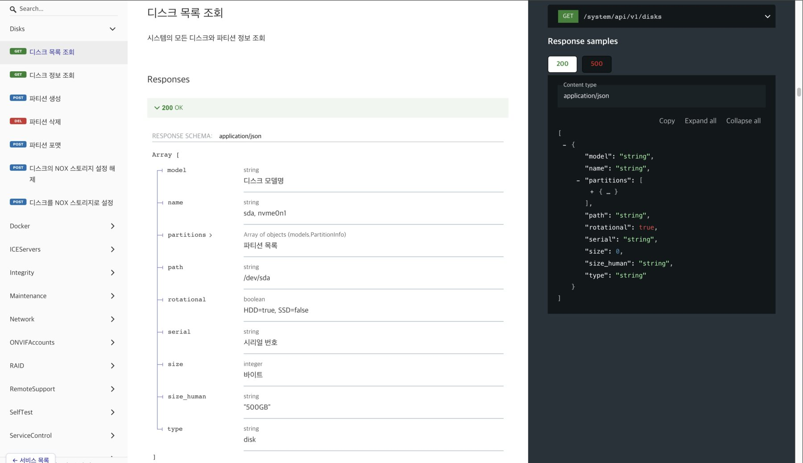
개방형 연동 구조
Open integration
영상과 이벤트가 NOX 내부에만 축적되면 활용 범위가 제한됩니다. WebHook과 REST API를 통해 사내 시스템으로 이벤트를 전달하고, 외부 시스템의 상태를 수신해 판단 조건에 반영합니다. 양방향 연동을 통해 상황에 맞는 조치를 선택적으로 실행합니다.
Footage and events confined to NOX have limited use. Events are delivered to in-house systems over WebHooks and the REST API, and external system state is received back and applied to the judgment conditions. Two-way integration is what makes it possible to select the action that fits the situation.
- 이벤트 발생 시 WebHook 호출, 페이로드와 조건의 시나리오별 정의WebHook calls on event, with payload and conditions defined per scenario
- 해당 시점 영상 클립 자동 추출 및 동시 전달Automatic extraction and delivery of the relevant video clip
- 외부 시스템 상태 수신 및 판단 조건 반영External system state received into the judgment conditions
- ERP·MES·CMMS·그룹웨어·메신저 연동Integrates with ERP, MES, CMMS, groupware, and messengers
주요 운영 화면
Key operating screens
관제 운영자가 상시 사용하는 주요 화면입니다. 모두 실제 제품 화면을 캡처한 것입니다.
The screens a control-room operator works with day to day. Every one is a capture of the actual product.
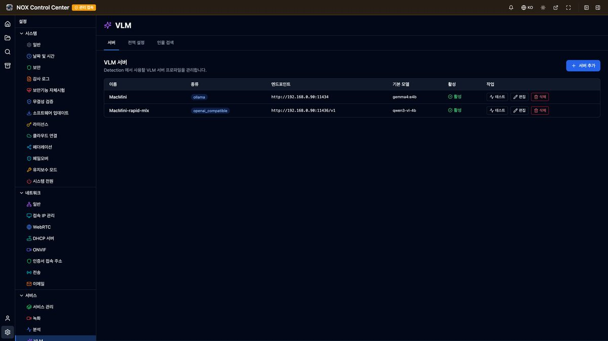
VLM 서버 사내 구축
In-house VLM servers
사내에 구축한 VLM 서버의 주소와 모델을 등록해 사용합니다. 영상의 외부 반출이 없으며, 모델 교체는 설정 변경만으로 처리됩니다.
Register the address and model of a VLM server on your own network. No footage leaves the premises, and swapping models is a configuration change.
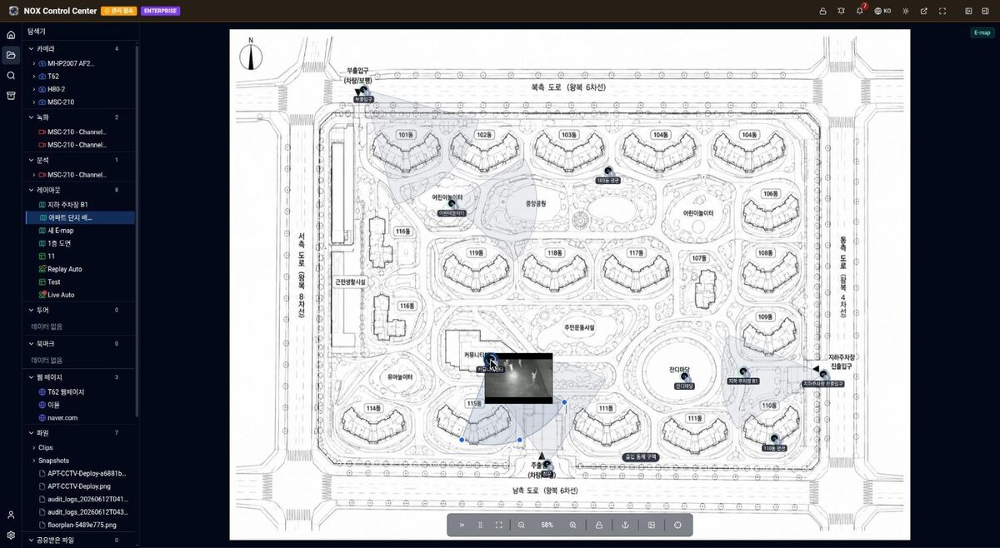
도면 기반 배치도 (E-map)
Floor-plan camera map (E-map)
평면도 위에 카메라와 시야각을 배치하며, 아이콘 선택 시 해당 카메라의 라이브 영상이 도면 위에서 실행됩니다. 이벤트 발생 시 해당 위치를 강조 표시합니다.
Cameras and their fields of view are placed on the building plan; selecting an icon opens that camera's live view on the map. The location is highlighted when an event occurs.
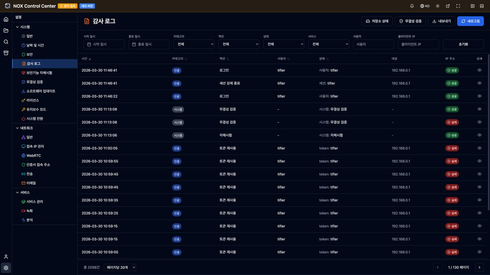
감사 로그
Audit log
로그인, 설정 변경, 무결성 검증 등의 조작을 사용자·IP·성공 여부와 함께 기록합니다. 기간·카테고리별 필터링과 내보내기를 지원하며, 기록 자체의 위·변조를 방지합니다.
Logins, configuration changes, and integrity checks are recorded with the user, the IP, and the outcome. Records are filterable and exportable by period and category, and are protected against tampering.
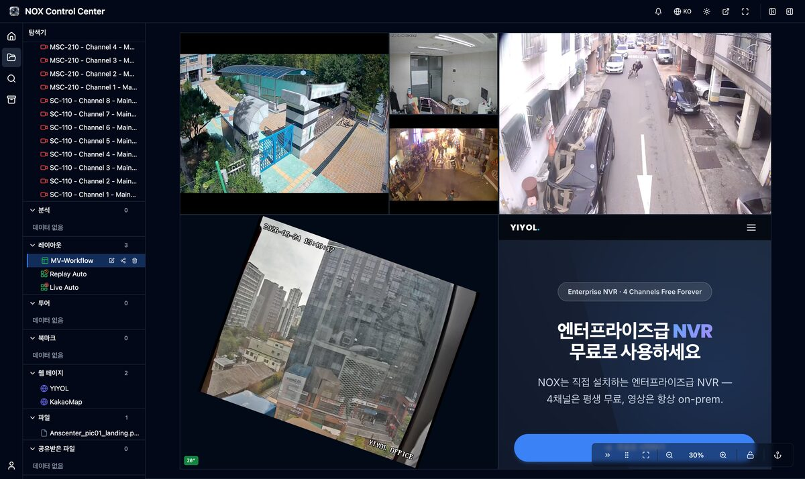
웹 브라우저 기반 운영
Browser-based operation
전용 클라이언트 설치 없이 웹 브라우저에서 전 기능을 사용합니다. 타일 크기와 배치를 자유롭게 구성하며, 카메라 외에 웹 페이지도 동일 화면에 배치할 수 있습니다.
Every function runs in a web browser with no client to install. Tile size and placement are freely composed, and web pages can be placed on the same screen alongside cameras.
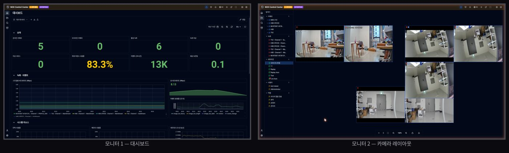
모니터별 역할 분리
Per-monitor roles
대시보드, 상시 관제, 알람 전용 등 모니터별로 역할을 분리해 운영합니다. 창별 역할 설정은 재부팅 후에도 유지됩니다.
Monitors are assigned separate roles: dashboard, standing watch, alarms only. Each window's role setting persists across a reboot.
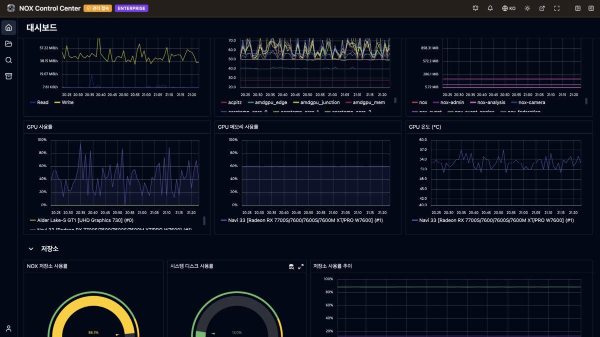
장비 상태 통합 모니터링
Integrated system monitoring
CPU·메모리·온도·디스크 I/O와 함께 GPU 사용률·메모리·온도, 저장소 사용률을 한 화면에서 조회합니다. 임계값 초과 시 관리자에게 알림을 발송합니다.
CPU, memory, temperature, and disk I/O are viewed alongside GPU utilization, GPU memory and temperature, and storage usage on one screen. An alert is sent to the administrator when a threshold is exceeded.
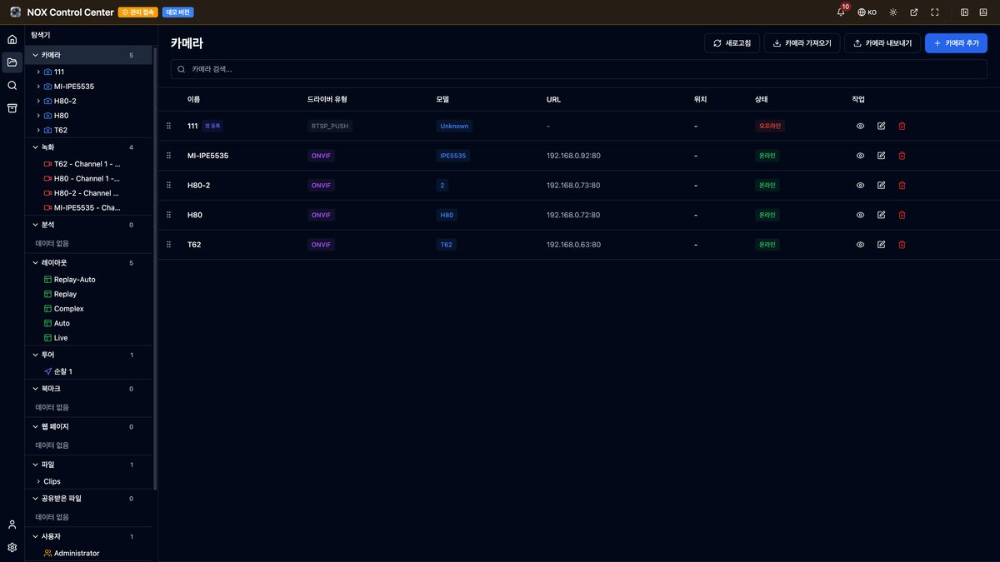
카메라 등록 및 관리
Camera registration and management
제조사 구분 없이 ONVIF·RTSP 카메라를 등록합니다. 자동 검색과 IP 검색을 함께 지원해 다른 서브넷의 장비도 찾으며, 커스텀 드라이버와 모바일 카메라도 같은 화면에서 추가합니다.
ONVIF and RTSP cameras are registered regardless of manufacturer. Auto-discovery and IP search are both supported so devices on another subnet are found too, and custom drivers and mobile cameras are added from the same screen.
상위 VMS 편입 (ONVIF 서버)
Upstream VMS integration (ONVIF server)
NOX 자체가 ONVIF 장비로 동작하므로, 운영 중인 상위 VMS에 카메라와 동일한 방식으로 편입됩니다. 별도 개발이 필요한 경우 REST API와 WebHook을 제공합니다.
NOX itself operates as an ONVIF device, so an upstream VMS already in service takes it in the same way it takes a camera. Where separate development is required, the REST API and WebHooks are provided.
모바일 카메라 지원 (WebRTC WHIP)
Mobile camera support (WebRTC WHIP)
WebRTC WHIP 방식으로 스마트폰 영상을 전송합니다. 고정 IP와 배선 없이 임시 작업 구역이나 이동 현장에 카메라를 추가 배치할 수 있습니다.
A phone's camera is pushed in over WebRTC WHIP. Cameras are added to a temporary work area or a moving site without a fixed IP or cabling.
4채널 무상 제공 (Free 모드)
Four channels at no cost (Free mode)
라이선스 등록 없이 4채널, 7일 보관으로 기간 제한 없이 사용합니다. 체험판이 아닌 동일 빌드로 동작하므로, 현장 적용 후 라이선스 등록만으로 채널을 확장합니다.
Four channels and seven days of retention run unlicensed with no expiry. It is the same build rather than a trial, so channels are expanded by registering a license after the site is already running.
NOX 자료 요청
Request the NOX materials
본 페이지에 수록하지 않은 기능과 상세 규격은 제품 소개서, 기능 상세, 규격서로 발송해 드립니다. 검토 중인 현장 조건(카메라 대수, 보존 기간, 폐쇄망 여부)이나 필요한 항목을 함께 기재해 주시면 그에 맞추어 준비합니다.
Functions and specifications not covered on this page are sent as a product overview, a detailed feature list, and a spec sheet. Include the site conditions you are evaluating (camera count, retention period, whether the network is air-gapped) or the items you need, and we will prepare the documents accordingly.
NOX-A08 시리즈
NOX-A08 Series
YIYOL이 자체 설계한 하드웨어에 NOX 소프트웨어를 탑재해 공급하는 어플라이언스입니다. 영상 수집·저장과 함께 AI 판단을 동일 장비에서 수행하고, 판단 결과에 따라 후속조치를 실행합니다. 8베이 핫스왑 SATA를 탑재한 2U 랙마운트 구성으로 32·64·128채널 3개 모델을 제공하며, 영상은 전량 고객 장비(온프레미스)에 보관됩니다.
An appliance built on hardware YIYOL designs itself, supplied with the NOX software already installed. It ingests and stores video, performs AI judgment on the same unit, and executes follow-up actions on the result. A 2U rackmount configuration with 8 hot-swap SATA bays is offered in three models (32, 64, and 128 channels), and all footage is retained on the customer's own hardware.

NOX-A08 시리즈
NOX-A08 Series
단일 2U 랙마운트 플랫폼에 8개의 핫스왑 SATA 베이(최대 240TB)를 구성한 NVR 어플라이언스 시리즈입니다. 32·64·128채널 3개 모델이 동일 플랫폼을 공유하며, 이중 LAN과 하드웨어 워치독으로 무인 운영 환경에서 자동 복구를 수행합니다. 3개의 독립 출력(2×4K HDMI + VGA)으로 대형 관제 화면을 구성합니다.
An NVR appliance series built on a single 2U rackmount platform with 8 hot-swap SATA bays (up to 240TB). Three models (32, 64, and 128 channels) share the same platform, with dual LAN and a hardware watchdog performing automatic recovery at unattended sites, and three independent outputs (2×4K HDMI + VGA) for large monitoring walls.
- 32 / 64 / 128채널 3개 모델 · 동일 8베이 플랫폼Three models (32/64/128 ch) on one 8-bay platform
- 8 SATA 핫스왑 베이 · 최대 240TB8 hot-swap SATA bays · up to 240TB
- 이중 LAN 및 하드웨어 워치독 기반 무중단 운영Dual LAN and hardware watchdog for nonstop operation
- 2×4K HDMI + VGA 3개 독립 출력Three independent outputs — 2×4K HDMI + VGA
- 국내 자체 설계 · 국가용 보안요구사항 V3.0 대응Designed and built in Korea, aligned to National Security Requirements V3.0
채널 규모별 3개 모델
Three models by channel capacity
전 모델이 8개의 핫스왑 SATA 베이를 갖춘 2U 랙마운트 어플라이언스이며, 채널 수만 상이합니다. 3개 모델 동시 출시 예정입니다.
Every model is a 2U rackmount appliance with 8 hot-swap SATA bays, differing only in channel count. All three are scheduled to launch together.
NOX-A08128
대규모 현장용 128채널 모델입니다. 최대 용량으로 통합 녹화를 수행합니다.
A 128-channel model for large sites, with maximum capacity in one unit.
NOX-A08064
중규모 현장용 64채널 모델입니다. 동일한 8베이 플랫폼을 공유합니다.
A 64-channel model for mid-size sites, sharing the same 8-bay platform.
NOX-A08032
소규모 현장용 엔트리 모델입니다. 32채널을 8베이 스토리지로 구성합니다.
An entry model for smaller sites, with 32 channels backed by 8-bay storage.
NOX Mobile
현장 외부에서 영상을 확인하는 전용 모바일 앱입니다. Android·iOS 앱으로 이벤트 푸시 알림을 수신해 해당 시점 영상을 즉시 확인하며, 실시간 멀티뷰와 녹화 재생을 제공합니다. 외부 네트워크에서도 보안 연결로 자사 NOX에 접속합니다.
A dedicated mobile app for checking footage away from the site. Event push notifications on the Android and iOS apps open straight onto the moment in question, with live multi-view and recorded playback. The connection to your own NOX is secured from any external network.

실시간 멀티뷰
Live multi-view
다수 카메라를 단일 화면에서 동시에 실시간 모니터링합니다.
Multiple cameras are monitored live on a single screen.

녹화 재생 · 타임라인
Playback & timeline
타임라인 조작으로 원하는 시점의 녹화를 즉시 재생하며, 배속 재생을 지원합니다.
The timeline is scrubbed to any moment for immediate playback, with adjustable-speed review.
- Android 전용 앱Dedicated Android app
- iOS 전용 앱Dedicated iOS app
- 실시간 멀티뷰, 녹화 재생, 이벤트 푸시 알림 지원Live multi-view, playback, and event push alerts
OEM
NOX의 수집·AI 판단·실행 코어를 파트너 제품에 임베드해 파트너 브랜드로 공급할 수 있도록 지원합니다. 하드웨어 제조사와 SI 파트너는 별도의 소프트웨어 개발 없이 AI 자동화를 지원하는 제품을 확보합니다.
The NOX capture, AI judgment, and execution core is embedded into a partner product and supplied under the partner's own brand. Hardware manufacturers and SI partners obtain a product with AI automation without undertaking separate software development.
- 화이트라벨 빌드 · 파트너 브랜딩White-label builds and partner branding
- 맞춤 기능 개발 · 외부 시스템 연동Custom feature development and integrations
- Vision AI·VLM 등 다양한 AI 모델 적용 지원Apply various AI models such as Vision AI and VLM
- 고객사 현장별 자동화 시나리오 구성 지원Support for building per-site automation scenarios for your customers